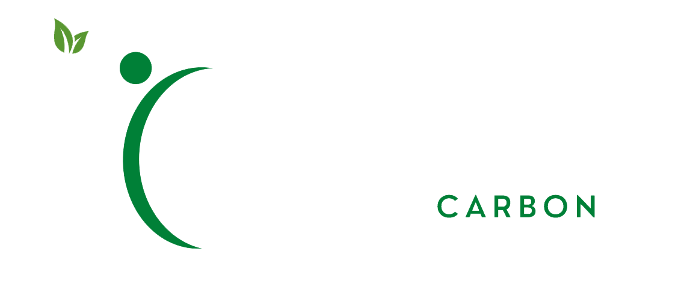
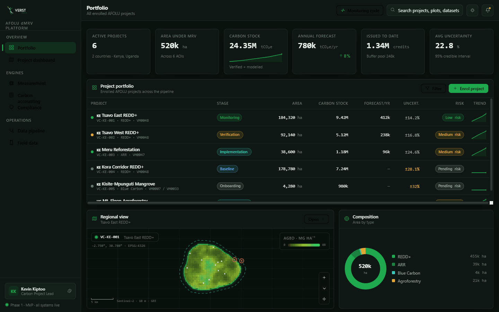
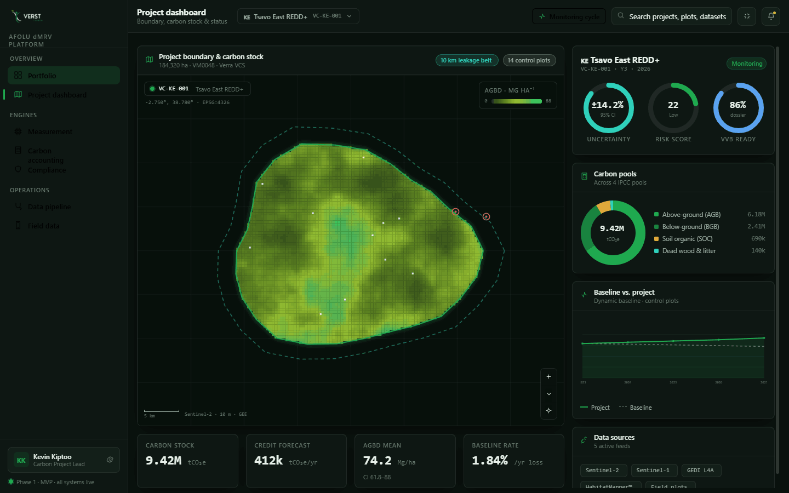
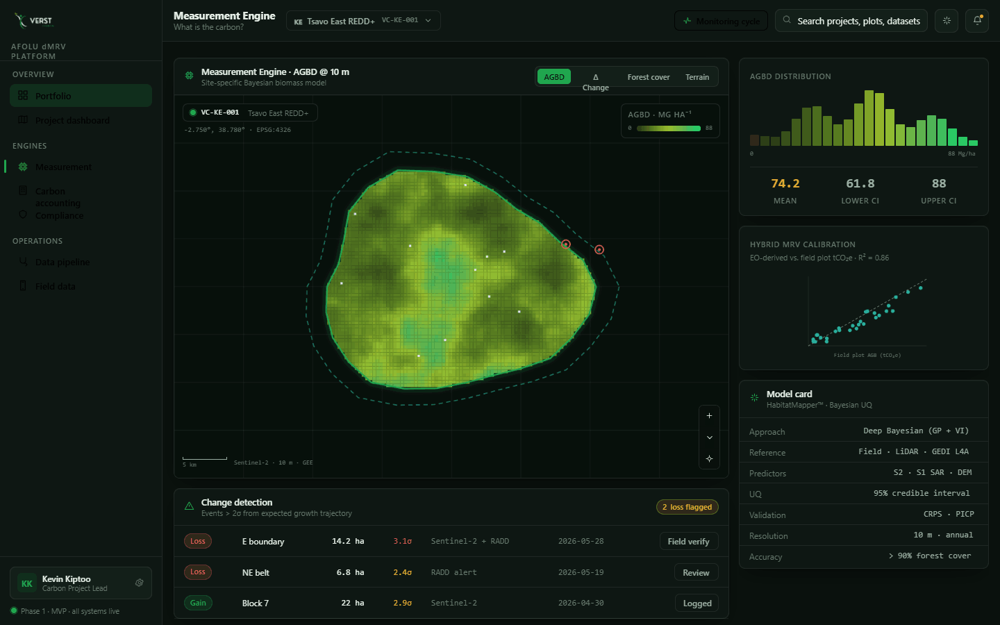
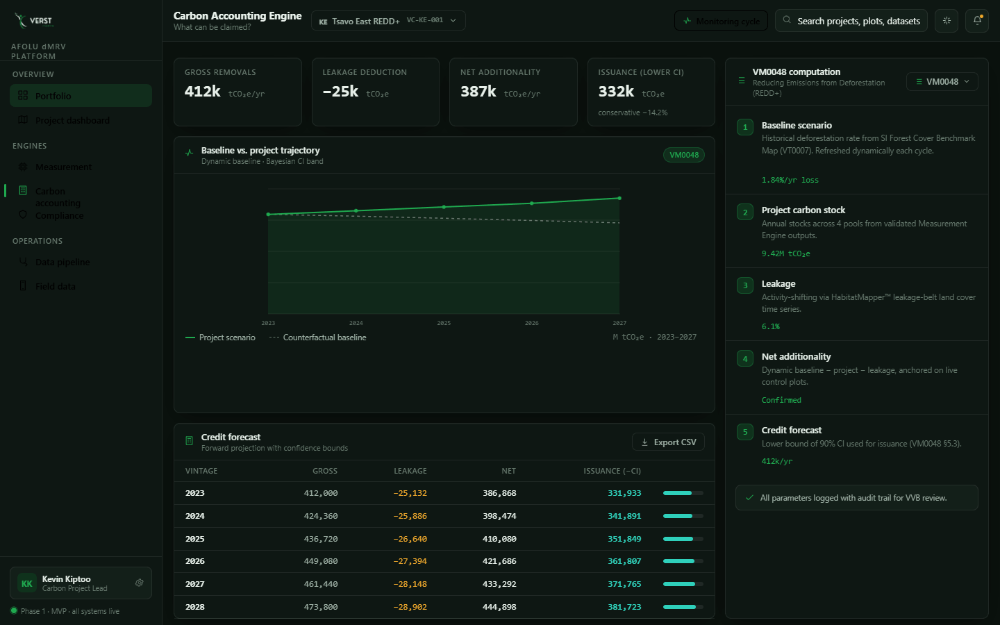
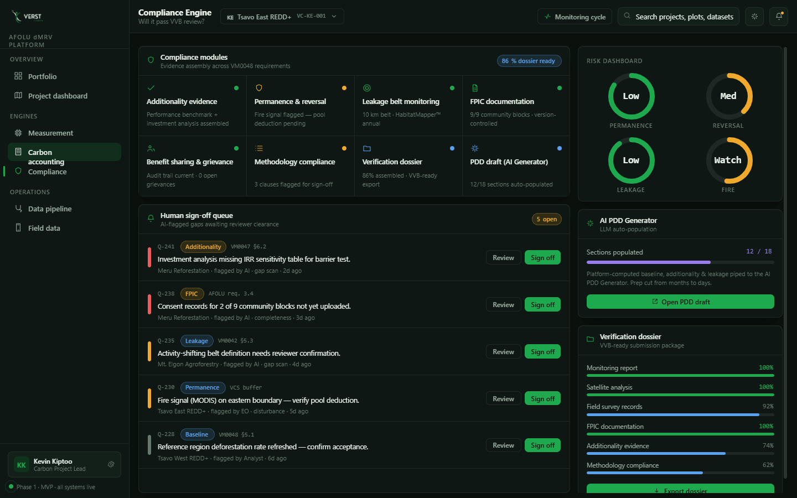
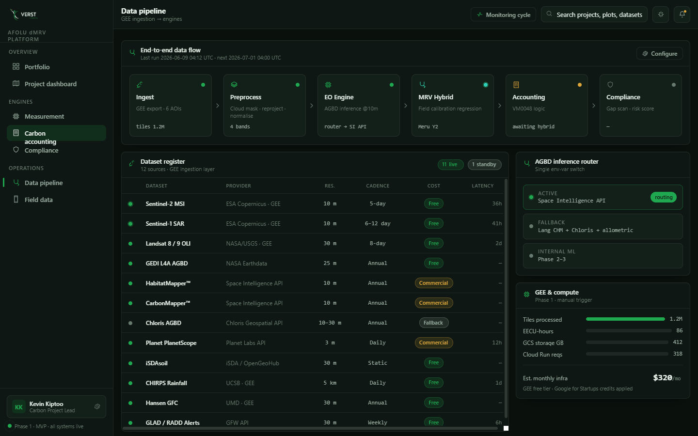
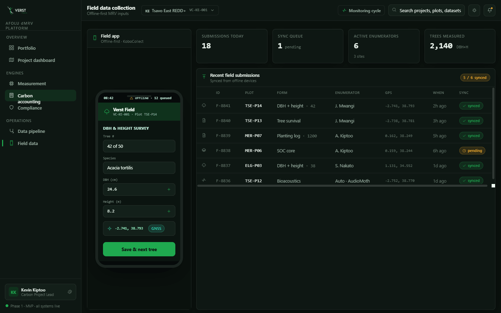
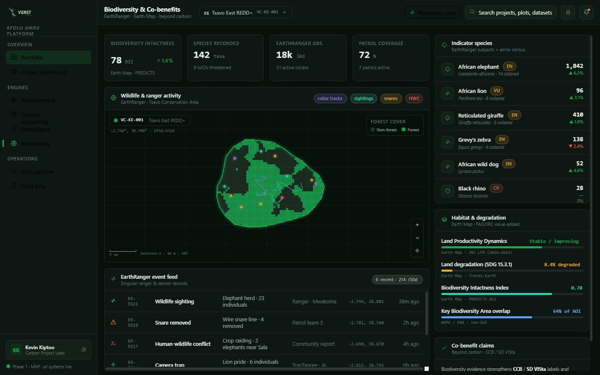

A satellite-first, AI-assisted digital MRV system purpose-built for African Agriculture, Forestry & Other Land-Use carbon projects.
Field-centric MRV is too costly, too slow, and too inaccurate for fragmented African landscapes. The reliability of MRV is now the single greatest determinant of project credibility and commercial viability.

Every enrolled AFOLU project, scored and mapped, in one place.

A full geospatial canvas with the carbon picture beside it.

"What is the carbon?" — answered at 10 m, with honest uncertainty.

VM0048 anchors Phase 1 — a dropdown extends to more standards.

"Will it pass VVB review?" — assembled, scored & queued for sign-off.

12 datasets through Google Earth Engine — mostly free & open.

Built for connectivity-constrained smallholder landscapes.

Wildlife & habitat data that turns carbon credits into premium, co-benefit-labelled credits.
Use Case 2 from the concept note — a complete, audit-ready monitoring package at a fraction of conventional MRV cost.
*GEE free tier during R&D. Excludes internal staff. Google for Startups offers up to $100k credits/yr — potentially absorbing most of Phase 1–2 infra.
Field-calibrated, satellite-first hybrid MRV is Verst Carbon's primary technical differentiator — credits that are demonstrably more accurate, transparent and defensible than conventional MRV.